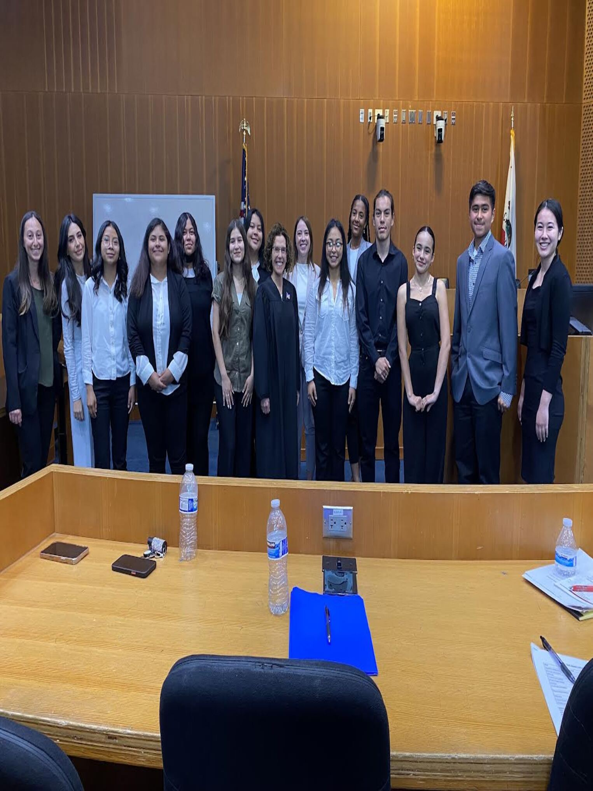
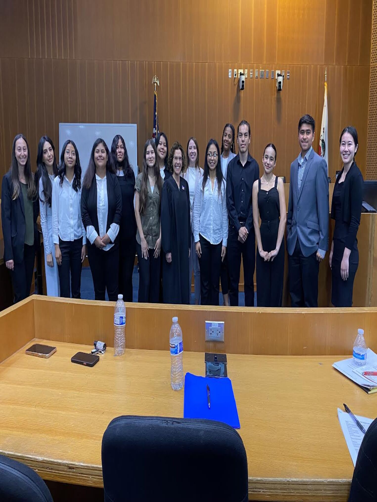
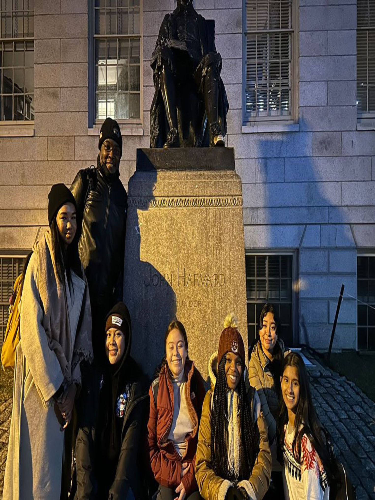
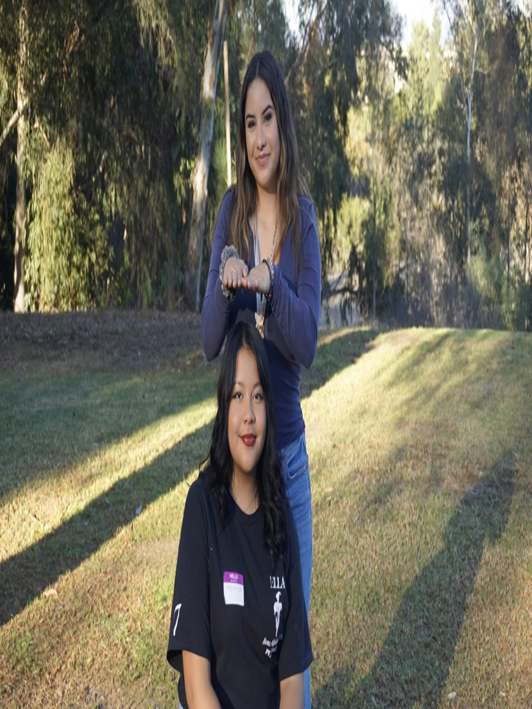
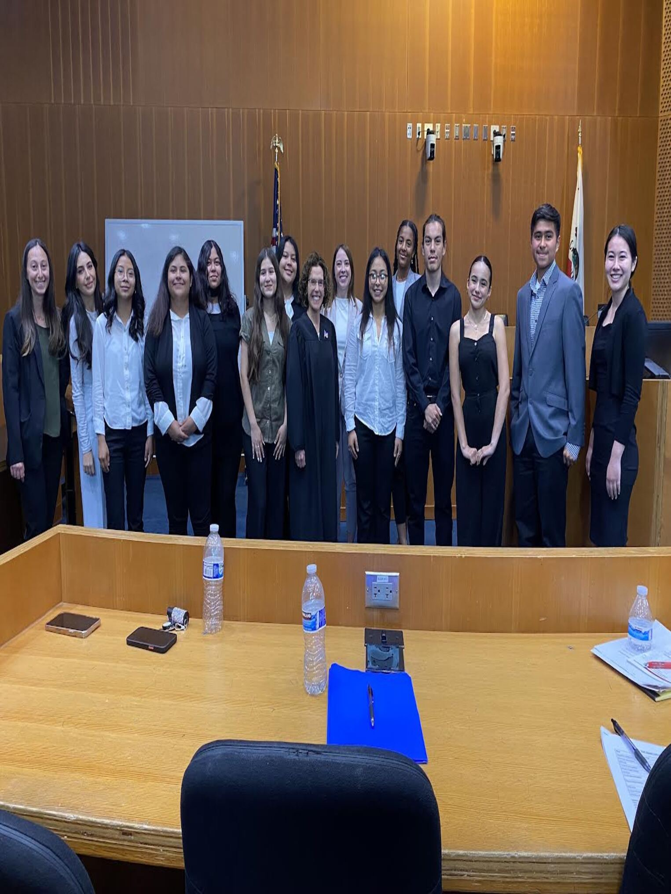
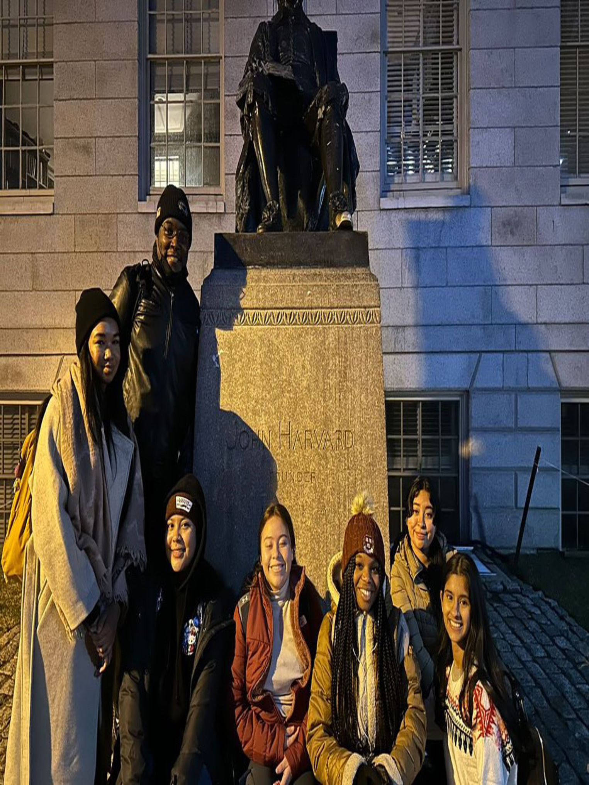
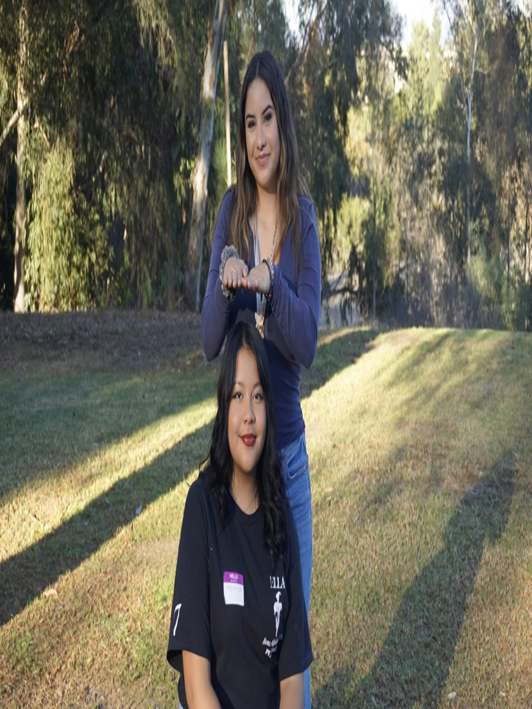

Nicollete Crespin
Hello and welcome — I’m Nicollette Crespin, a passionate and purpose-driven student pursuing a degree in Political Science at the University of California, Riverside. As a first-generation college student with roots in El Salvador, my academic journey is fueled by a commitment to social justice, equity, and advocacy for underrepresented communities. I’m currently exploring the intersections of law, policy, and community empowerment, with a strong ambition to become a public defender or district attorney. I believe in using the law not just as a tool for justice, but as a force for meaningful change. Throughout my undergraduate experience, I’ve actively sought out opportunities that strengthen my leadership, communication, and analytical skills. From engaging in competitive debate and public speaking to participating in legal immersion programs, I’ve built a solid foundation in critical thinking, persuasive argumentation, and public policy research. I’ve had the privilege of volunteering at places like the California Science Center and working with cultural resource centers like the Chicano Student Programs at UCR, where I collaborate with students who, like me, are navigating college life while honoring their cultural identity and community values. In addition to academics and volunteer work, I’m deeply interested in digital advocacy and content creation. I’ve begun working with brands on social media, offering honest product promotion and helping connect audiences to causes that matter. Whether it’s through writing, design, or public speaking, I strive to elevate voices that are often unheard and represent stories that are too often untold. I bring this same energy into all of my professional and creative endeavors — a mix of dedication, authenticity, and a desire to build meaningful connections. As I continue to grow personally and professionally, I’m especially interested in internships and mentorships within the legal field. I’m always eager to work with organizations focused on criminal justice reform, youth outreach, and educational equity. If you’re a fellow advocate, aspiring lawyer, or organization looking to collaborate, I’d love to connect and see how we can work together toward a better future. Thank you for stopping by and taking the time to learn more about me!
Experience
Young Lawyers Program Participant
• Participated in legal workshops and courtroom simulations
• Collaborated with law students and legal professionals
• Gained exposure to litigation, trial advocacy, and legal writing
Volunteer and Youth Science Guide
• Guided school groups through science exhibits and demonstrations
• Provided educational support to children and families
• Promoted hands-on learning and STEM exploration in underrepresented communities
Debate Captain & Student Leader
• Led the varsity debate team for two years and trained novice members
• Represented school in local and national competitions
• Organized team strategy sessions and public speaking workshops
• Promoted civic engagement and critical thinking in student body
Active Member
• Participated in cultural events, community service, and sisterhood activities
• Collaborated on leadership development programs and philanthropy projects
• Promoted Latina empowerment, academic excellence, and cultural pride
Education
University of California, Riverside
Member of Sigma Pi Alpha Sorority, Chicano Student Programs, and pre-law organizations
Portfolio
 



 